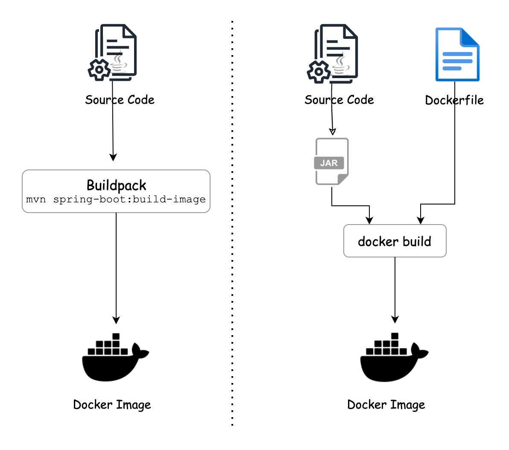

Containerizing RadPlanBio
Overview
The first step towards the goal of containerization of RadPlanBio has been to review the potential options available. More precisely, its a brief, preliminary assessment of various approaches for containerization of java applications. There is more than one alternative for creating/managing containers, namely Docker, LXC, Cloud Foundry, Vagrant etc. For this use case, all the references are made using Docker as the container-platform.
Image is a critical component in the process of containerization. The following methods mainly varies in the process of “building image”, but the nature and behavior of resultant containers don’t differ vastly. To build an image(docker-image) of a java based application, they can be realized using following approaches:
Method-1: Dockerfile
Method-2: Buildpack
Method-3: JIB
The simple spring-boot application used for following examples is here
Method-1: docker-file
A Dockerfile simply acts as the blueprint of a container, should be created and stored in the project’s local folder. Before writing the Dockerfile, it is safe to have the artifact ready. Simply create a new-file in the home directory of the java project and name it Dockerfile. An abstract view of a docker file for our use case looks like:
Step-1: Creating the Dockerfile
FROM adoptopenjdk/openjdk11:alpine-jre
ARG JAR_FILE=target/spring-boot-web.jar
WORKDIR /opt/app
# cp target/spring-boot-web.jar /opt/app/app.jar
COPY ${JAR_FILE} app.jar
ENTRYPOINT ["java","-jar","app.jar"]
Point to the openjdk as base image using FROM, a correct image tag is required to avoid pulling the latest version. Use COPY to add the artificat inside the container. Container port assignment can be skipped for later.
Step-2: Creating docker-image
To build the image out of the Dockerfile, use the docker-build command
docker build -t method1:1.0 #(any desired image name with tag)
It will create the image. The image can be store locally or on the repo. To check basic attributes of the images, run docker images
Step-3: Spawning up the Container
After successfully building the image, next step is to spawn up its container.
docker run -it -p 8080:8080 method1:1.0
This is a most common approach to build the container of an service. A very versatile method, independent of the source code of service. Dockerfile also allows for greater control over attributes of the image through simple commands.
Method-2 Buildpack
In the previous approach, a Dockerfile is the requirement to construct an image. As an alternative the developer can also build the image from within hthe development environment of the application using the maven builder. Since Spring Boot 2.3.0, buildpack is integrated in the framework. Using Buildpack eliminates the need for writing a Dockerfile. Though, the docker daemon needs to be running on the system for maven builder to successfully create the image. It only involves two steps.
Step-1: Creating docker-image
From the project directory run the build command as:
mvn spring-boot:build-image
A container image gets created where the image name will be the application name from the pom file and the image version will be the version from the pom file. Images can be renamed afterwards using docker tag .
Step-2: Spawning up the Container
docker run -it -p 8080:8080 buildpack:1.0
An illustrative comparison of the two methods is:
Method-3 JIB
JIB approach is similar to Buildpack. JIB is a maven plugin developed and maintained by google cloud. In comparison to Buildpack, JIB offers customization, while adding the plugin to the pom file, we can control certain attributes of the image to be built.
Step-1: Add JIB plugin
To use JIb, we need to add a maven plugin into the pom file as follows:
For a simplified run:
<plugin>
<groupId>com.google.cloud.tools</groupId>
<artifactId>jib-maven-plugin</artifactId>
<version>3.2.0</version>
</plugin>
For a customized run:
<plugin>
<groupId>com.google.cloud.tools</groupId>
<artifactId>jib-maven-plugin</artifactId>
<version>3.2.0</version>
<configuration>
<from>
<image>openjdk:17</image>
</from>
<to>
<image>jib-build-${project.name}:${project.version}</image>
</to>
</configuration>
<executions>
<execution>
<phase>verify</phase>
<goals>
<goal>dockerBuild</goal>
</goals>
</execution>
</executions>
</plugin>
Here, the desired base image is specified in the <from> tag and the desired final image-name in the <to> tag.
Now, the goal dockerBuild in the <execution> section creates the docker image in the local docker daemon. If instead goal build is used, the JIB plugin will build the docker image and also push it to the respective repository. It supports all the major repositories like docker.io, AWS ECR, Google GCR, Azure ACR, etc.
Step-2: Creating the docker-image
To create the image, run the following command from project’s local directory.
mvn compile jib:dockerBuild
A container image gets created where the image name will be the application name from the pom file and the image version will be the version from the pom file.
Step-3: Spawning up the Container
Use docker run command to create the container from new image.
docker run -it -p8080:8080 jib:1.0
In Method-1, if we use different variant of java(openjdk/jre), the resultant image is of varying size but the steps involved are quite similar because they all involves creating a Dockerfile.
Conclusion
Dockerfile(method-1) method is a common approach, which is not limited to java applications. This is the most used method to start packing any app/service in a container(docker) The 2nd method(buildpacks) is relatively new but limited to java based applications/services. It is the most convenient method for containerising java apps as it involves fewer steps but it is also the method which offers least control over attributes of the image. In the 3rd method using JIB, a unique benefit is independency from docker engine. The developer can simply create an image using maven even if there is no docker engine running at the local machine. Additionally, the base image, build-type, image repo and other factors can be controlled.
Method |
Estimated image size |
Dockerfile requirement |
Comments |
|---|---|---|---|
Dockerfile |
≈150 MB |
Yes |
Offers greater control on image, source code independent, docker daemon |
Buildpack |
≈260 MB |
No |
Quick, lighter images, limited control on image, maven, docker daemon |
JIB |
≈270 MB |
No |
Added control on image attributes, maven, docker daemon is not mandatory |
Note: Because one container can only run 1 service, so we can containerize each component(LabKey, LibreClinica etc) individually and then implement a multi-container-runtime approach to achieve the complete containerization of RPB. Docker provides such a solution to harmonize the multi-service app, its docker-compose, where each container run single microservice as a part of the bigger app/service(eg. RadPlanBio).
Note: Image sizes mentioned in this document are not universally true, it varies based on size of the application being containerized but the size of images produced from each method are of similar ratio.
References
Application Containerization Overview
Getting started with Docker(Java)
Guide to JIB
Source code here